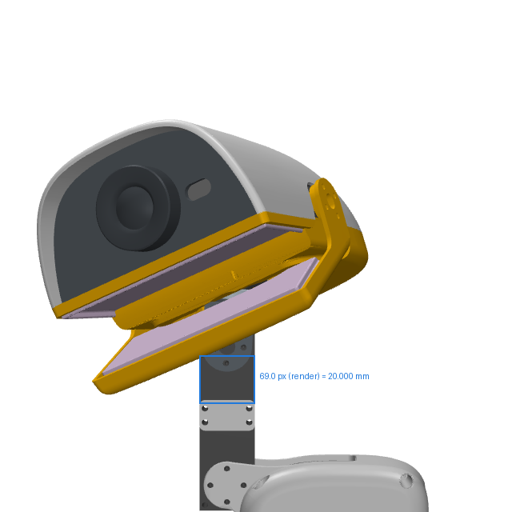
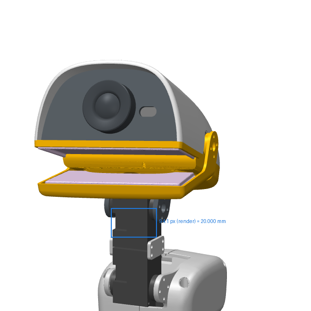

← Release dossier · Reference match
Microduck reverse-engineering · lane A · head conformance
Is the simulation head the product head? Measured from the photographs.
GOAL.md finding 1 said the simulation head is "far longer front-to-back than the compact domed head in every product photo" and its eye bezel is missing; the handover correction demoted that to CANNOT DETERMINE. Leif: "im not sure that the simulation meshes are the same as their product meshes! you have to use the images as references". This document settles it by measurement: every product photograph is scaled by the XL330-M288-T servo visible in the same frame, our model is posed to the photograph with a perspective camera, and the head shell is compared in millimetres against the mesh's 91.760 × 122.690 × 46.336 mm under the rebuild rule (1.5 mm per axis), never loosened.
out/head/head.jsongenerator: tools/gen_head.py1Verdict
noenoeil.stl is a Ø30.000 mm ring,
7.5 mm long, standing proud of the face panel (whose only opening is the Ø14.5 mm lens hole) — exactly the accent-colour ring in the
photographs. Measured against it at the head's own scale (ring diameter over head extent, photograph against render), the product ring reads -0.02 ± 0.32 mm in the profile shots and +1.16 mm implied by the true front view (ratio to head width). The ring's
position on the face — +0.93 mm below the shell top,
-2.13 mm off the mid-line, the ToF window +0.13 mm from
the MJCF site — matches the mesh (§6).
head: 2 photographs, each scaled by the XL330-M288-T case in the same frame (20.000 mm), posed and fitted with a perspective camera, size ratio product/mesh = k * W_render / W_photo; combined length deviation +0.791 ± 5.132 mm; per-axis -0.437 ± 4.752 / +0.267 ± 2.794. Eye bezel: profile ring diameter vs the noenoeil mesh 30.000 mm, and the true-front-view ratio eye OD / head width (photo 0.3353 vs mesh 0.3226).
2The question and the rule
COMPARISON.html §5.1 could only compare scale-free silhouette ratios, and the one photograph it used has the beak open and the head pitched and yawed — so its +69 % aspect-ratio difference was confounded and it stopped at CANNOT DETERMINE, naming photogrammetric scaling against the servo as the evidence that would settle it. That is what this document does. The grading rule is the one every rebuilt part on this shelf is held to — docs/REBUILD-PROTOCOL.md §3: PASS = p95 <= 1.0 mm both ways AND bbox within 1.5 mm per axis AND 0 unmatched reference features — applied to the product as the reference and Pollen's mesh as the candidate. Because a photograph yields a deviation d with an uncertainty u, the verdict is decided the only honest way: PASS when |d| + u ≤ 1.5 mm, FAIL when |d| − u > 1.5 mm, otherwise CANNOT DETERMINE. Nothing is loosened; a measurement that cannot discriminate at 1.5 mm says so.
| Item | Value | Source |
|---|---|---|
top_head_shell | 91.760 × 122.690 × 46.336 | out/verify/mech_dims.json (length = 122.690 along the mesh's second axis) |
bottom_head_shell | 91.763 × 116.748 × 20.136 | out/verify/mech_dims.json |
jaw | 91.416 × 68.710 × 29.448 | out/verify/mech_dims.json |
noenoeil (eye ring) | Ø30.000 × 7.5 boss, Ø14.4 bore | reference/pollen-microduck-rl/assets/noenoeil.stl via cecad.meshfeatures.cylinders(scale=1000): boss d_mm 30.0 length 7.5 axis y; hole d 14.4 length 6.0. face_part.stl: hole d 14.5 length 1.3 at the same axis, no 30 mm opening — the ring stands proud of the face panel (noenoeil y -63.5..-54.0, face_part front at y -55.5). |
| XL330-M288-T case width | 20.000 mm | ROBOTIS e-manual, XL330-M288-T, Specifications table: 'Dimensions (W x H x D) 20.0 x 34.0 x 26.0 [mm]', https://emanual.robotis.com/docs/en/dxl/x/xl330-m288/ (fetched 2026-09-02; the same table at https://docs.robotis.com/docs/dxl/model_reference/x_series/xl_series/xl330-m288/, which links XL330.pdf/.dwg/.stp). Face seen: the 20.000 x 34.0 horn/label face — the servo mesh in Pollen's MJCF is 20.000 (mesh x) x 34.06 (mesh z) x 29.04 (mesh y = 26.0 case + 3.04 horn) and in the neck body mesh x = world -x, mesh z = world -z (tools/head_probe.py). |
3Scale — millimetres per pixel from the servo in the same frame
The XL330-M288-T is the only object of independently known size in every store photograph. Its case width is read as the mode of the dark-run widths over many scan lines across the case (label text and cables break single lines; the case gives the same width on every clean line). The same case in our render at the fitted camera is Wrender = (20.000·|sin az| + 26.000·|cos az|) mm × (frame px / frame mm) × Dhead/Dservo — exact, because the render's frame is by construction 190 mm at the head's depth and the servo's depth is read off the posed model; the segmentation mask of the servo geom is read with the same mode-of-runs estimator as a cross-check. The size ratio product/mesh = k · Wrender / Wphoto therefore carries the servo-to-head depth difference through the camera model rather than assuming it away. Uncertainty per servo: ±1 px per edge plus the accepted lines' spread, and the fit's spread of k.
| Photograph | Feature | Width in photo (px) | mm / px | Width in render (px, analytic; mask cross-check) | Size ratio product/mesh | Depth servo / head (mm) |
|---|---|---|---|---|---|---|
| Cream, standing, left profile (store) | upper neck servo (head_pitch), horn/label face | 131.30 (30 of 129 lines) | +0.15232 ± 0.00172 | 68.37 mask 69.0 px (+0.9 %) | +1.0374 ± 0.0120 | 1084.1 / 1100.0 |
| Cream, standing, left profile (store) | lower neck servo (neck_pitch), horn/label face | 131.46 (46 of 63 lines) | +0.15214 ± 0.00174 | 68.37 mask 69.0 px (+0.9 %) | +1.0362 ± 0.0121 | 1084.1 / 1100.0 |
| Sky, standing, three-quarter front-left (store) | upper neck servo (head_pitch), label face + side face | 151.22 (32 of 83 lines) | +0.13226 ± 0.00146 | 109.61 mask 94.1 px (-14.2 %) | +1.4109 ± 0.0177 | 1080.9 / 1100.0 |
| Sky, standing, three-quarter front-left (store) | lower neck servo (neck_pitch), label face + side face | 165.45 (11 of 57 lines) | +0.12088 ± 0.00126 | 108.90 mask 93.7 px (-13.9 %) | +1.2812 ± 0.0154 | 1087.9 / 1100.0 |
| Graphite, standing, right profile (store) | near (right) ankle servo, label face; tilted with the shin | 136.81 (42 of 65 lines) | +0.14619 ± 0.00178 | 71.37 mask: not visible | +0.9489 ± 0.0117 | 1038.6 / 1100.0 |
4Photographs, posed and overlaid — real beside ours, always
For each photograph the model is posed by fitting camera elevation, azimuth (3/4 shots), distance, head pitch / yaw / roll, the jaw opening and a similarity transform, maximising silhouette IoU of the head region plus the eye-ring ellipse match. The jaw is not a joint in the published model; its geoms are rotated about the measured hinge (the 15×10×3 bearing centre). Head pitch is the head's orientation relative to the trunk, 0 = level (eye-ring axis horizontal, bisected on the mesh), positive = face up.
| Photograph | IoU | eye term | D (mm) | az (°) | el (°) | pitch (°) | yaw (°) | roll (°) | jaw (°) | k |
|---|---|---|---|---|---|---|---|---|---|---|
| Cream, standing, left profile (store) | 0.9558 | 0.00156 | 1100.0 | 269.99 | 0.01 | -3.54 | 61.95 | -25.00 | 24.87 | +1.9922 ± 0.0047 |
| Sky, standing, three-quarter front-left (store) | 0.9381 | 0.00076 | 1100.0 | 204.67 | -11.22 | -19.84 | 2.18 | -4.46 | 20.73 | +1.9465 ± 0.0116 |
| Graphite, standing, right profile (store) | 0.9571 | 0.00037 | 1100.0 | 89.99 | 1.26 | -23.71 | -46.35 | 13.77 | 0.00 | +1.8190 ± 0.0037 |
4.1 Cream, standing, left profile (store)
head yawed towards the camera, jaw open · images/store/store_microduck-cream-standing-profile-left.jpg 2400×2400 px ·
fitted camera distance 1100 mm, IoU 0.956,
head pitch -3.5° yaw 62.0° roll -25.0° jaw 24.9°



Scale PASS — servos agree; render mask and analytic width agree. Size ratio product/mesh +1.0368 ± 0.0085 → head length +4.519 ± 1.044 mm CANNOT DETERMINE — the photographs disagree by 5.13 mm rms, more than this photo's own ±1.04 mm — a systematic error the per-photo uncertainty does not contain; only the combined row grades; along the head's own axes: major +3.646 ± 1.777 mm, minor +3.558 ± 1.482 mm.
4.2 Sky, standing, three-quarter front-left (store)
three-quarter view, jaw open; camera azimuth fitted · images/store/store_microduck-sky-standing-three-quarter-left-02.jpg 2400×2400 px ·
fitted camera distance 1100 mm, IoU 0.938,
head pitch -19.8° yaw 2.2° roll -4.5° jaw 20.7°



Scale CANNOT DETERMINE — the two servos read in this photo give size ratios 1.4109 and 1.2812 — 5.5 sigma apart (their dark runs are not the same face); upper neck servo (head_pitch), label face + side face: the render's mask read of the case is -14.2 % off the analytic width, so the case silhouette at this azimuth is not the 20 x 26 box the photo scan assumes; lower neck servo (neck_pitch), label face + side face: the render's mask read of the case is -13.9 % off the analytic width, so the case silhouette at this azimuth is not the 20 x 26 box the photo scan assumes. Size ratio product/mesh CANNOT DETERMINE → head length CANNOT DETERMINE mm CANNOT DETERMINE; along the head's own axes: major CANNOT DETERMINE mm, minor CANNOT DETERMINE mm.
4.3 Graphite, standing, right profile (store)
head yawed towards the camera, jaw closed; scale from the ankle servo (44 mm nearer the camera than the head — the perspective camera carries that) · images/store/store_microduck-graphite-standing-profile-right-02.jpg 2400×2400 px ·
fitted camera distance 1100 mm, IoU 0.957,
head pitch -23.7° yaw -46.4° roll 13.8° jaw 0.0°


The scale servo of this photograph (the ankle) lies outside the head-centred render frame, so there is no mask read to draw; its render width is the analytic value in Table 2 (case 20.000 mm × frame px/mm × depth ratio from the posed model).
Scale PASS — servos agree; render mask and analytic width agree. Size ratio product/mesh +0.9489 ± 0.0117 → head length -6.273 ± 1.437 mm CANNOT DETERMINE — the photographs disagree by 5.13 mm rms, more than this photo's own ±1.44 mm — a systematic error the per-photo uncertainty does not contain; only the combined row grades; along the head's own axes: major -5.968 ± 2.068 mm, minor -2.106 ± 1.259 mm.
5Measured dimensions — product against mesh, in millimetres
Head length deviation = 122.690 × (r − 1). Major / minor are the extents of the head region along its own principal axes in the photograph (0.5 / 99.5 percentile, so a stray pixel cannot set them) against the render's extents at the servo-anchored scale — the shape residual left after the size ratio. Uncertainty per axis: the scale uncertainty, ±2 px on each mask edge, and the mm/px uncertainty, in quadrature.
| Photograph | r = product/mesh | Length dev (mm) | Major photo (mm) | Major mesh (mm) | Δ major (mm) | Minor photo (mm) | Minor mesh (mm) | Δ minor (mm) · verdict |
|---|---|---|---|---|---|---|---|---|
| Cream, standing, left profile (store) | +1.0368 ± 0.0085 | +4.519 ± 1.044 | 118.724 | 115.079 | +3.646 ± 1.777 | 96.151 | 92.594 | +3.558 ± 1.482 CANNOT DETERMINE the photographs disagree by 5.13 mm rms, more than this photo's own ±1.04 mm — a systematic error the per-photo uncertainty does not contain; only the combined row grades |
| Sky, standing, three-quarter front-left (store) | CANNOT DETERMINE — scale excluded: the two servos read in this photo give size ratios 1.4109 and 1.2812 — 5.5 sigma apart (their dark runs are not the same face); upper neck servo (head_pitch), label face + side face: the render's mask read of the case is -14.2 % off the analytic width, so the case silhouette at this azimuth is not the 20 x 26 box the photo scan assumes; lower neck servo (neck_pitch), label face + side face: the render's mask read of the case is -13.9 % off the analytic width, so the case silhouette at this azimuth is not the 20 x 26 box the photo scan assumes (the excluded read would have been r = +1.3369 ± 0.0116, +41.34 ± 1.42 mm) | |||||||
| Graphite, standing, right profile (store) | +0.9489 ± 0.0117 | -6.273 ± 1.437 | 114.415 | 120.383 | -5.968 ± 2.068 | 64.320 | 66.426 | -2.106 ± 1.259 CANNOT DETERMINE the photographs disagree by 5.13 mm rms, more than this photo's own ±1.44 mm — a systematic error the per-photo uncertainty does not contain; only the combined row grades |
| Combined (inverse-variance; spread 5.132 mm) | +1.0064 ± 0.0431 | +0.791 ± 5.290 | — | — | -0.437 ± 4.752 | — | — | +0.267 ± 2.794 CANNOT DETERMINE |
6Eye bezel — does the product have a part the mesh lacks?
No. The mesh has it: noenoeil is a Ø30.000 mm × 7.5 mm ring in front of the face panel (Table 1). The shelf folder
ce-parts/microduck-eye-ring was created empty ("nothing measured yet"); the numbers below are what it should carry. Two independent
reads of the product ring: (a) in each profile photograph the accent-hue ring pixels give an ellipse whose major axis is the ring diameter,
scaled by the servo (and, more robustly, by the same ring in the render through the fitted similarity — "via render", which needs no mm/px);
(b) the flat-lay inside-the-box photograph is a true front view, so every face feature is a scale-free ratio to the head width, compared
with our mesh rendered in a true front view with the head level.
| Photograph | Ellipse major × minor (px) | ring / head extent, photo / render | Δ Ø scale-free (mm) | Ø via servo (mm, carries the D question) | Centre offset (mm) | Verdict |
|---|---|---|---|---|---|---|
| Cream, standing, left profile (store) | 243.3 × 202.4 | 0.3119 / 0.2663 | +5.15 ± 0.49 | +37.04 ± 0.52 | -0.26 / -1.16 | CANNOT DETERMINE ring axis ratio photo 0.832 vs render 0.980: the render's ring is partly hidden at this pose, the two extents are not the same feature |
| Sky, standing, three-quarter front-left (store) | 205.7 × 204.9 | 0.2796 / 0.2804 | -0.09 ± 0.44 | +26.04 ± 1.23 | -2.50 / -1.37 | PASS ring axis ratio photo 0.996 vs render 0.996 agree |
| Graphite, standing, right profile (store) | 189.5 × 145.2 | 0.2421 / 0.2417 | +0.05 ± 0.46 | +27.70 ± 0.45 | -0.24 / +0.60 | PASS ring axis ratio photo 0.766 vs render 0.852 agree |

| Ratio | Photo | Mesh | Diff | Photo (mm, implied) | Mesh (mm) | Δ (mm) |
|---|---|---|---|---|---|---|
| eye ring OD / head width | 0.3353 | 0.3226 | +3.91 % | 30.76 | 29.61 | +1.16 |
| eye ring minor / major (view tilt) | 0.9820 | 0.9998 | -1.78 % | 90.11 | 91.74 | -1.63 |
| eye centre below shell top / head width | 0.3061 | 0.2959 | +3.43 % | 28.09 | 27.16 | +0.93 |
| eye centre off the mid-line / head width | -0.0242 | -0.0010 | +2326.00 % | -2.22 | -0.09 | -2.13 |
| ToF window centre right of the eye / head width | 0.2455 | 0.2441 | +0.56 % | 22.53 | 22.40 | +0.13 |
| ToF window centre below the eye / head width | 0.0017 | — | — | 0.16 | — | CANNOT DETERMINE no mesh-side value |
| ToF window width / head width | 0.1068 | — | — | 9.80 | — | CANNOT DETERMINE no mesh-side value |
| ToF window height / head width | 0.0591 | — | — | 5.42 | — | CANNOT DETERMINE no mesh-side value |
| beak lip (bottom shell) top edge below shell top / head width | 0.5114 | 0.5159 | -0.88 % | 46.92 | 47.34 | -0.42 |
the flat-lay ring is seen 11 deg off-axis (minor/major 0.9820), so ratios along the face are good to ~2 %; the photo's mm values assume the head width is the mesh's 91.763 mm — they are the implied product dimension, not an independent measurement The ToF window (a rounded slot 9.8 × 5.4 mm implied) has no geom in the mesh — the face panel's slot is CANNOT DETERMINE on the mesh side and is a feature the face-part rebuild must carry.
6bCamera distance — the one thing the store frames do not give
The store photographs carry no EXIF and no ruler; the near ankle servo reads 136–146 px against the neck's 131.4 px (44.1 mm nearer) depending on the scan tilt, which brackets D only between ~700 and ~1650 mm. Because the head is yawed ~50° towards the camera, its face is ~45 mm nearer than the servo and the head-to-servo ratio moves with D. The fit was therefore repeated at other distances; the half-range of r over these runs is added to the uncertainty of the verdict.
| Photograph | D (mm) | IoU | fitted yaw (°) | r = product/mesh | head length dev (mm) | file |
|---|---|---|---|---|---|---|
| cream-profile-left | 2000 | 0.9137 | 66.3 | +1.0560 ± 0.0088 | +6.86 | out/head/head_fit_cream-profile-left_D2000.json |
| cream-profile-left | 600 | 0.8977 | 72.6 | +1.0578 ± 0.0086 | +7.09 | out/head/head_fit_cream-profile-left_D600.json |
| cream-profile-left (main run) | 1100 | 0.9558 | 62.0 | +1.0368 ± 0.0085 | +4.52 | out/head/head_fit.json |
| graphite-profile-right (main run) | 1100 | 0.9571 | -46.4 | +0.9489 ± 0.0117 | -6.27 | out/head/head_fit.json |
camera distance is CANNOT DETERMINE from the store frames; the half-range of r over the sensitivity runs (2000 mm: 1.0560, 600 mm: 1.0578) is added in quadrature to the length uncertainty
The pure-profile frame — scale-free check
scale-free: head silhouette major/minor, real 2.5291 vs Pollen's render of these meshes 2.4387 (ratio 1.0371); the two halves are not the same pose (head pitch -166.6 vs -170.5 deg in the image), so this is a coarse check, not a dimension. The servo in that 884-px video frame merges with its bracket and cables, so it gives no mm/px (out/head/profile_frame.json states why); it is kept because it is the only published view with the head un-yawed, real beside Pollen's own render.

7What would settle the remaining CANNOT DETERMINEs
- The camera distance of the store photographs: a 1 mm ruler in the frame, or the EXIF focal length + sensor (stripped from the published files), would fix D and remove the ±0.0105 the sensitivity runs put on r.
- A calliper on one product head: top_head_shell length (mesh 122.690 mm), width (91.760) and height (46.336) to 0.1 mm — a 0.1 mm reading beats every photograph here by an order of magnitude and settles the 1.5 mm rule outright.
- Or one more photograph taken for the purpose: pure profile, beak closed, head level, a ruler or the XL330 label face in the focal plane of the head, 4000+ px on the long side — the scale uncertainty then drops below 0.5 % (0.6 mm on the length).
- The eye ring: a calliper across the ring's outer edge (mesh noenoeil 30.000 mm), or Pollen's part drawing; the front-view photograph already puts it at +1.16 mm (implied) and the profiles at -0.02 ± 0.32 mm.
8Method and honest limits
- Scripts.
tools/head_photomatch.py(scale, pose fit, size — writesout/head/head_fit.jsonand every overlay),tools/head_frontview.py(front-view ratios —out/head/front_view.json),tools/head_verdict.py(merge + verdict —out/head/head.json),tools/gen_head.py(this page). Renderer: MuJoCo offscreen segmentation at 1000², perspective free camera whose field of view follows the fitted distance so the head always spans the same frame. - Which servo face. Read off the published MJCF: the servo mesh is 20.000 (mesh x) × 34.06 (mesh z) × 29.04 (mesh y, case + horn) and in the neck body
mesh x = world −x, mesh z = world −z, so a profile camera sees the 20.000 × 34 horn/label face (
tools/head_probe.py). The photographs show the label on that face, as the drawing does. - Perspective. The store shots are close (fitted D in Table 3); the near and far edges of the head differ in scale by up to 4 % at 0.5 m, which is why the camera is perspective and D is fitted rather than assumed orthographic.
- What the numbers are not. Bounding-box level agreement between the product and the mesh. Not a p95 surface-distance check (that needs a scan of a product head), not a manufacturing tolerance. Every number is from published photographs and published digital assets; no physical unit has been callipered.
- Mask edges. The head region is the non-white silhouette above a neck cut, minus a neck polygon drawn by hand and shown on every measurement picture; the cream shell against the white background is segmented by chroma as well as luminance. Edge uncertainty ±2 px is carried into every mm.